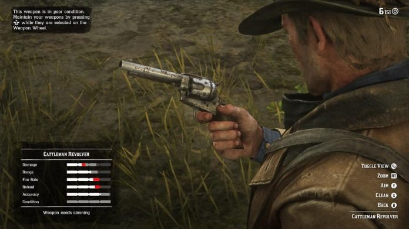
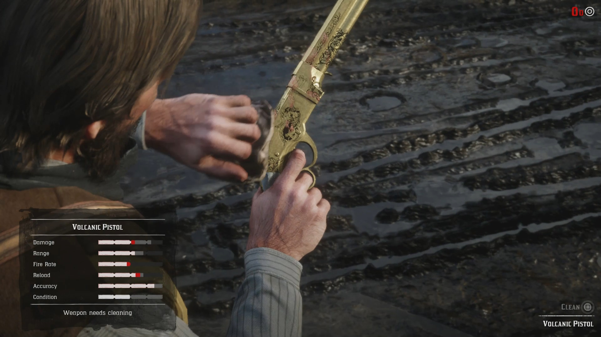
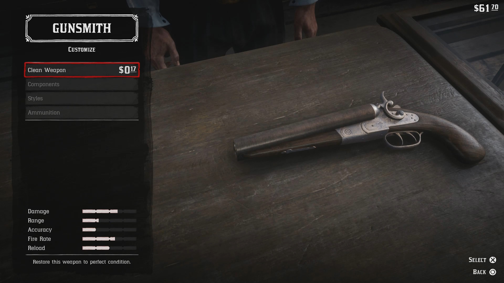
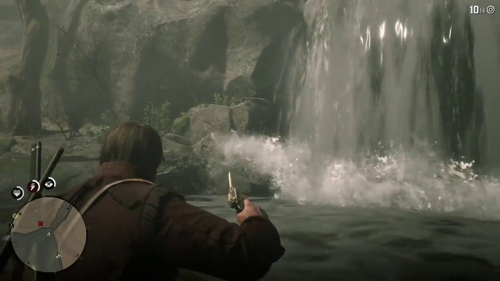
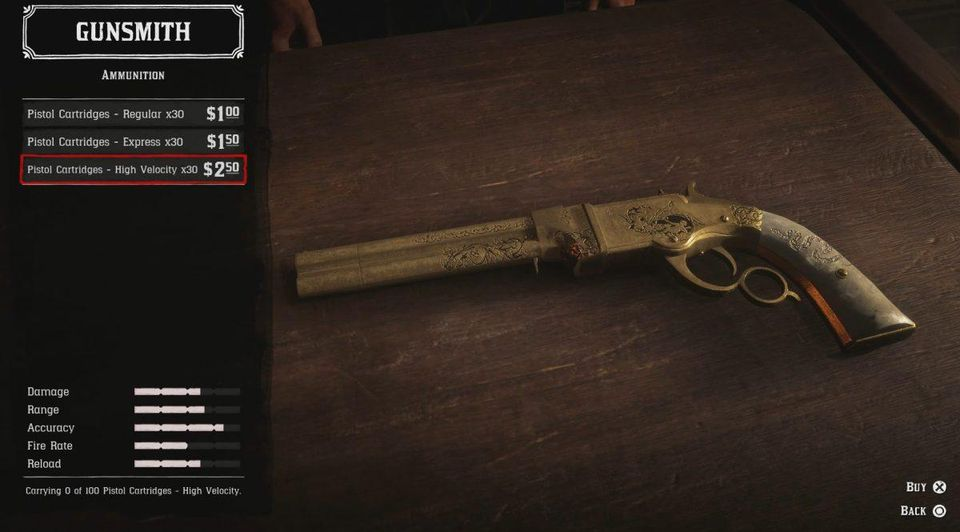
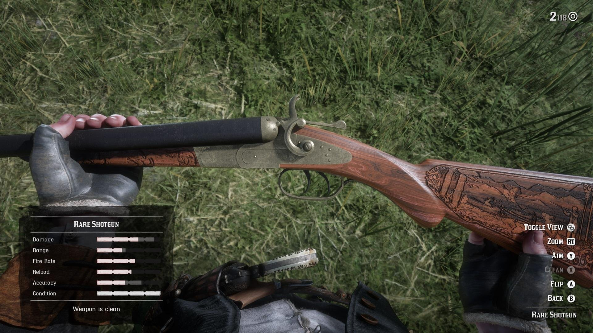

1. Чистка оружия

Если долго не обращать внимание на своё оружие, то оно может испортиться, в плане грязи и пыли, которые будут на нем висеть... Его характеристики начнут ухудшаться, вместе с его состоянием.... И нет, оно не сломается, как в том же Fallout New Vegas... Оно будет: трелять косо, будет большой разброс и тд..

Придется чистить своё оружие, если вы хотите выходить из перестрелок живым, а не полумертвым... Для этого вам нужна тряпочка и оружейное масло, которое можно купить по 5$ в оружейном магазине или найти(Чаще всего у банды Ларами)

Так же, если у вас нет оруженийного масла и мало денег(Что достаточно вероятно), то сдайти оружие к оружейнику на чистку(Цена за чистку варируется от степени порчи оружия)... Но обычно это от 0.1$ и выше

Когда персонаж заходит в воду на 70 - 75%, то его оружие моментально очищается, что позваляет вам сэкономить не только деньги, но и оружейное масло
2. Модификация оружия


Прийдя к оружейнику, вы сможите кастомизировать своё оружие, причем ни как-то поверхностно, как это обычно бывает... А в рамках той эпохи, в которой существует герой... Что я имею ввиду? Длинна ствола, надрез ствола, прицел и т.д...
Ах да, забыл упомянуть, вы так же можете выбирать для своего оружия: узор на металле, цвет металла, рисунок на рукояти(револьвер), прекладе(винтовка)... Вы даже можете надевать чехол на оружие

Все, что описанно до этого блока касается только обычных стволов, а редких нет... Да, да вы не то что не сможете улучшить редкое оружие, так ещё приукрасить его тоже не получиться.. Такие вот дела... Но не расстраиваетесь, все равно на редком оружие бывает красивый узор!